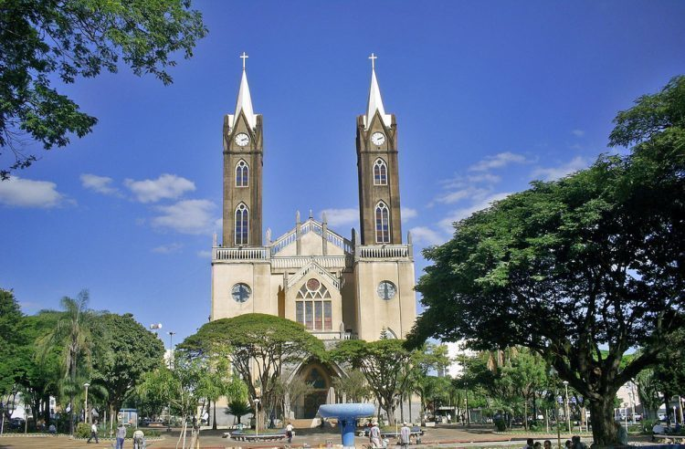

Sobre Votuporanga
Votuporanga é uma cidade localizada no interior do estado de São Paulo. Atualmente, o município possui cerca de 100 mil habitantes. De acordo com o Censo de 2022, a cidade possuía 96.634 habitantes, e a estimativa do IBGE para 2025 é de 100.568 habitantes.

Um pouco sobre a cidade
A cidade é conhecida pelo significado de seu nome, que vem do tupi: Votu significa ar ou brisa e Poranga significa belo, bom ou bonito. Por isso, Votuporanga pode ser entendida como "Bons Ares", "Bons Ventos" ou "Brisas Suaves".